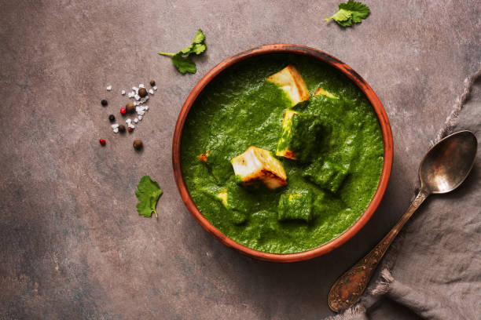

Palak Paneer

Description
Soft paneer cubes in a creamy spinach sauce.
Ingredients
- 200g paneer, cubed
- 2 cups spinach, blanched and pureed
- 1 onion, finely chopped
- 1 tomato, pureed
- 1 tsp cumin seeds
- 1 tsp garam masala
- 1/2 cup cream
- Salt to taste
Steps
- Sauté cumin seeds, add onions and cook until golden.
- Add tomato puree, spinach puree, and spices. Cook for 10 minutes.
- Add paneer cubes and cream. Simmer for 5 minutes.
- Serve hot with naan or rice.